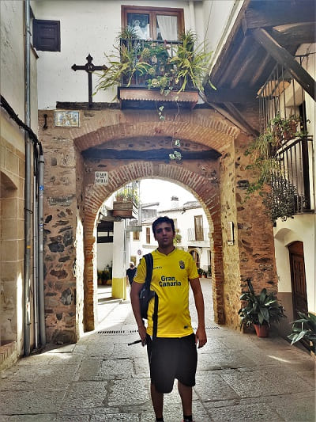
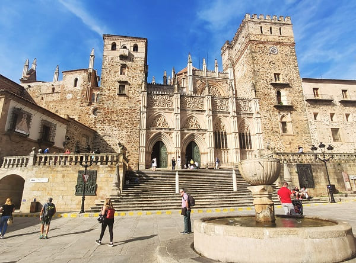
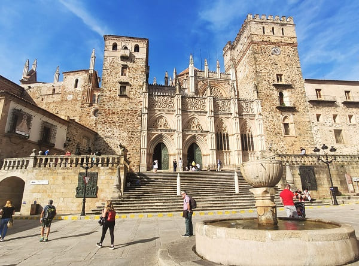
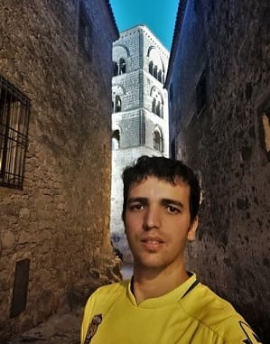
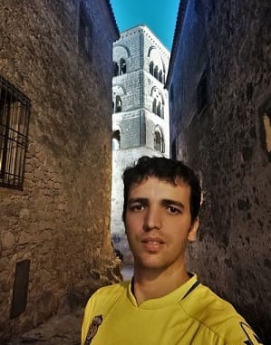
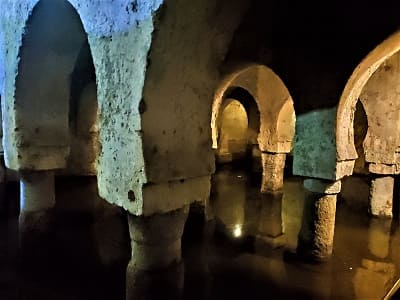
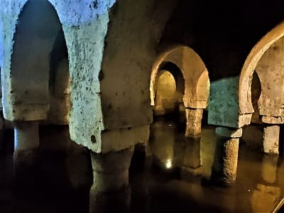

Salí por la mañana de Toledo camino de Mérida, primera ciudad grande y la más monumental del viaje junto a Cáceres y quizás una de las ciudades con más historia de España, cuyas calles esconden debajo de sus suelos grandes tesoros de la época romana o posterior. Esta ciudad era la elegida por las élites romanas para jubilarse y pasar sus últimos años de vida. Mérida viene de emérita y significa retirado.
Mérida es famosa por su teatro y su anfiteatros romanos, pero existen muchísimos otros atractivos para esta ciudad. Yo la visite cuando era pequeño y justamente me acuerdo de estos lugares. En esta visita no me gaste ni un euro en monumentos y me llevo todo el día muy diferente de la visita de pequeño en la que pararía no más de cuatro horas y vería cuatro sitios diferentes.
Aparque el coche no muy lejos de el teatro romano y sin pagar ni 1 euro ya que lo deje en una zona residencial muy próxima a un supermercado. Empezaría por lo cercano al teatro como es el museo romano donde están las figuras originales tanto del anfiteatro como del teatro. Además guarda muchos objetos encontrados en excavaciones de toda la comunidad autónoma de Extremadura. Muchos mosaicos de residencias romanas expuestas en las paredes de este museo que además de ser grande tiene bastante altura, tres plantas y casi 20 metros de altura. En la siguiente imagen muestro como era una casa romana de la época, del museo arqueológico. Es el museo referente romano de toda la península ibérica, por delante del museo de Evora de Portugal.

Esta dividido también en épocas romanas y tiene una gran colección de monedas y de vasijas de la época.


Tras concluir mi visita por el museo, visitaría el obelisco y la basílica de santa Eulalia, basílica que por dentro impresiona bastante pero no pase a la cripta que es de pago y guarda una de las imágenes más antiguas de esta santa.
Esta basilica fue el primer templo cristiano erigido en Hispania tras la Paz del Emperador Constantino; esta iglesia fue por tanto edificada como basílica martirial en memoria de Eulalia de Mérida; por ello se convirtió, durante los albores de la Edad Media, en lugar de peregrinaciones que llegaban desde el Occidente Europeo y desde el Norte de África. Es patrimonio de la Humanidad debido a en gran medida a las excavaciones que se realizaron en su subsuelo y sacaron a la luz el primer túmulo funerario de santa Eulalia del siglo IV. Las pinturas originales encuentran en muy buen estado de conservación.

 Después ya hacia el centro visitaría el foro romano en el que se conserva el portico, el templo de Diana cuya plaza ha sido restaurada recientemente, el arco de trajano como uno de los restos romanos principales.
Después ya hacia el centro visitaría el foro romano en el que se conserva el portico, el templo de Diana cuya plaza ha sido restaurada recientemente, el arco de trajano como uno de los restos romanos principales.
El denominado Templo de Diana es un templo romano construido en el siglo I d. C. en la ciudad de Augusta Emerita, capital de la provincia romana de Lusitania, actual Mérida (España). Se levantó en el foro municipal de la ciudad romana siguiendo la configuración habitual de los templos de la antigüedad clásica y es el único edificio religioso romano que ha perdurado en Mérida en un aceptable estado de conservación. En realidad estaba dedicado al culto imperial, no a la diosa Diana, y debió ser uno de los templos principales de la urbe, a juzgar por su dedicación y por el lugar preeminente que ocupaba en el espacio urbano. Desde 1993 está declarado Patrimonio de la Humanidad como parte del Conjunto arqueológico de Mérida.


 Visite la alcazaba y el museo visigótico que esta dentro de un convento como monumentos de otras épocas. La alcazaba fue construida por Abderramán II en el año 835 d. C. como bastión para controlar la ciudad, que desde el año 805 se había rebelado continuamente contra el dominio emiral. Ello la convierte en la fortificación musulmana más antigua que se conserva en la península ibérica. La fortificación consiste en un recinto cuadrado de 130 metros de lado capaz de albergar un buen número de tropas.
Visite la alcazaba y el museo visigótico que esta dentro de un convento como monumentos de otras épocas. La alcazaba fue construida por Abderramán II en el año 835 d. C. como bastión para controlar la ciudad, que desde el año 805 se había rebelado continuamente contra el dominio emiral. Ello la convierte en la fortificación musulmana más antigua que se conserva en la península ibérica. La fortificación consiste en un recinto cuadrado de 130 metros de lado capaz de albergar un buen número de tropas.
 Como edificios religiosos la concatedral de Santa María la Mayor y la iglesia del Carmen y la plaza de la catedral. La concatedral tiene la importancia en que fue levantada en el siglo XIII, tras la reconquista, por la catedral católica más antigua de la península, la catedral visigoda de Santa María de Jerusalen. De ella apenas queda un pilar dentro que esta en una de las capillas. Muy cerca visitaría el parador nacional de Mérida, construido sobre un singular palacio.
Como edificios religiosos la concatedral de Santa María la Mayor y la iglesia del Carmen y la plaza de la catedral. La concatedral tiene la importancia en que fue levantada en el siglo XIII, tras la reconquista, por la catedral católica más antigua de la península, la catedral visigoda de Santa María de Jerusalen. De ella apenas queda un pilar dentro que esta en una de las capillas. Muy cerca visitaría el parador nacional de Mérida, construido sobre un singular palacio.
Después de ver todo el centro saldría hacia las afueras a través del parque del río. Primeramente esta el puente de hierro del ferrocarril construido en el siglo XIX y más al final es donde se encuentra una de las maravillas ocultas de Mérida, el acueducto de los Milagros. Uno de los acueductos más largos conservados en España y más desconocidos ya que al estar en las afueras pocos los conocen. Con esto ya iría camino del hotel al norte de Mérida que me iba a permitir ver la provincia de Cáceres mejor, ya que este viaje salvo Mérida iba enfocado a la provincia de Cáceres.


El primer punto a visitar de la mañana el pueblo de Montanchez, cuyo castillo es completamente visitable y se ubica en lo alto del pueblo. El pueblo es bastante común a otros pueblos de la zona, con una iglesia bastante antigua, la del Salvador y una plaza mayor recientemente restaurada.
 El segundo pueblo, Alcuescar, es algo más grande que el anterior. Cuenta con una iglesia más grande que la de Montanchez, la de la Asunción. Pero lo que más destaca es por tener a sólo 3 kilómetros del pueblo la iglesia de Santa Lucía del Trampal. Una de las pocas iglesias en toda España en pie de la época visigótica. Es mezcla entre visigótica y mozárabe y debido a que estaba oculta en la maleza durante siglos, ha sido conservada en muy buen estado. Fue descubierta por un expoliador que andaba buscando restos de la guerra de la independencia francesa y se encontró con esta construcción. Entonces ante el aviso al pueblo sería limpiada toda la zona y realizados los primeros trabajos arqueológicos. Todos los restos de esta iglesia se encuentran en el museo arqueológico de Cáceres. Si bien han edificado un edificio para dar cabida a un guarda y realizar una explicación del edificio así como una proyección visual.
El segundo pueblo, Alcuescar, es algo más grande que el anterior. Cuenta con una iglesia más grande que la de Montanchez, la de la Asunción. Pero lo que más destaca es por tener a sólo 3 kilómetros del pueblo la iglesia de Santa Lucía del Trampal. Una de las pocas iglesias en toda España en pie de la época visigótica. Es mezcla entre visigótica y mozárabe y debido a que estaba oculta en la maleza durante siglos, ha sido conservada en muy buen estado. Fue descubierta por un expoliador que andaba buscando restos de la guerra de la independencia francesa y se encontró con esta construcción. Entonces ante el aviso al pueblo sería limpiada toda la zona y realizados los primeros trabajos arqueológicos. Todos los restos de esta iglesia se encuentran en el museo arqueológico de Cáceres. Si bien han edificado un edificio para dar cabida a un guarda y realizar una explicación del edificio así como una proyección visual.


Después de ver estos dos pueblos vería Valdefuentes, muy cerquita del hotel donde me aloje, que esta a apenas 30kms de Cáceres. Este pueblo cuenta con una plaza muy amplia y un par de iglesias, así como un gran palacio de la nobleza de aquella época, hoy propiedad del ayuntamiento.
Por la tarde después de comer fui a ver Guadalupe, y su monasterio que si bien lo había visitado cuando era un niño no me acordaba prácticamente de nada. La entrada a la iglesia del monasterio es gratuita y la entrada al monasterio es de 5 euros. Merece mucho la pena entrar ya que te muestran salas que son auténticas joyas culturales, repletas de pinturas y de piedras preciosas. Y es que Guadalupe durante muchos años ha sido lugar de peregrinación a la virgen y se ha donado oro y joyas desde América. El claustro es uno de los más grandes de España teniendo un amplio jardín y es que este monasterio llego a albergar la vida de 400 frailes. El pueblo además guarda bastante homogeneidad en sus edificaciones, con un suelo empedrado y unas calles con multitud de arcos históricos.

 

 
Después de ver el monasterio iría a Trujillo, uno de los pueblos más bonitos y con más historia de Cáceres y me atrevería a decir de toda España. Es tal la densidad de monumentos por metro cuadrado, siendo palacios y edificios religiosos en su mayoría que ha sido elegida junto con Cáceres para rodar en ella la mega producción cinematográfica de Juego de Tronos y ha sido reelegida para rodar numerosas escenas de la nueva serie, la precuela de Juego de Tronos, serie compuesta de 10 temporadas, una de las más largas.

Después de ver el monasterio iría a Trujillo, uno de los pueblos más bonitos y con más historia de Cáceres y me atrevería a decir de toda España. Es tal la densidad de monumentos por metro cuadrado, siendo palacios y edificios religiosos en su mayoría que ha sido elegida junto con Cáceres para rodar en ella la mega producción cinematográfica de Juego de Tronos y ha sido reelegida para rodar numerosas escenas de la nueva serie, la precuela de Juego de Tronos, serie compuesta de 10 temporadas, una de las más largas.
Este pueblo tenía una alcazaba bastante grande en tiempos de los árabes pero llegaría su esplendor gracias a los conquistadores españoles en América. El conquistador más famoso es Francisco Pizarro, que cuenta con un gran palacio en la plaza central y una estatua a caballo que es de las más fotografiadas de España. La plaza esta rodeada de palacios ya que muchos de sus hombres eran de Trujillo y además cuna de otros conquistadores. El palacio de la Conquista el más visitado que cuenta con un gran escudo en la esquina del edificio y el de San Carlos. Edificios religiosos destacados son la iglesia de San Martín en la plaza Mayor, la iglesia de Santiago y la de santa María la Mayor. En esa zona hay varias torres defensivas y murallas que le dan ese aire medieval a la ciudad. Además tiene más iglesias mas lejos del centro y conventos que aumentan la monumentalidad de la ciudad. Lo que se echa en falta es las visitas a los interiores de los palacios, y que la mayoría de las iglesias solo abran en horario litúrgico y no para el turismo, al menos cuando yo estuve. Estuve apenas 3 horas pero este pueblo bien merece un día entero para visitarlo.

Como plato principal del viaje la visita a Cáceres, que junto con Mérida son ciudades Patrimonio de la Humanidad.
La «Ciudad Monumental de Cáceres» fue declarada por el Consejo de Europa como el Tercer Conjunto Monumental de Europa en 1968 y Patrimonio de la Humanidad por la Unesco en 1986.
Cáceres una ciudad amurallada plagada de palacios y de bonitas plazas y altas torres como la torre de Bujaco que da la entrada al casco histórico. La lista de las torres de la ciudad es amplia:

 Lo más reseñable de Cáceres es la cantidad de palacios en tan reducido espacio y el estado de conservación de los mismos.
La lista de palacios es larga encontrándose:
Lo más reseñable de Cáceres es la cantidad de palacios en tan reducido espacio y el estado de conservación de los mismos.
La lista de palacios es larga encontrándose:
 
De los cuales empezaría por el palacio de los Carvajales, actual sitio de la diputación de Cáceres en la que se puede visitar el patio y los jardines. Seguiría por el palacio de los Golfines de Abajo que es visitable desde hace no muchos años (el de arriba es un restaurante). Este palacio cuenta con una buena colección de salas neoclásicas. La joya del palacio es la sala de armas del cual al hacer la última reforma se descubrió el artesonado original así como una cantidad de pinturas escondidas tras la última reforma en la que se pinto todo de blanco. Están recogidos todos los blasones y escudos nobiliarios así como retratos de los diferentes marqueses del palacio.

De los cuales empezaría por el palacio de los Carvajales, actual sitio de la diputación de Cáceres en la que se puede visitar el patio y los jardines. Seguiría por el palacio de los Golfines de Abajo que es visitable desde hace no muchos años (el de arriba es un restaurante). Este palacio cuenta con una buena colección de salas neoclásicas. La joya del palacio es la sala de armas del cual al hacer la última reforma se descubrió el artesonado original así como una cantidad de pinturas escondidas tras la última reforma en la que se pinto todo de blanco. Están recogidos todos los blasones y escudos nobiliarios así como retratos de los diferentes marqueses del palacio.


Al empezar con Almoharín, un pueblo con una plaza y calles tipicas de la zona.

 Después iría a ver Medellín como plato fuerte del día, ciudad de nacimiento del mejor conquistador Español en América, Hernan Cortes, conquistador de todo el valle de México. Esta ciudad es de origen romano y recientemente se ha recuperado el circo romano y columnas y restos romanos. La importancia de la urbe romana viene del gran puente que cruza el río. Después de los romanos vendrían los árabes y construirían una gran fortificación en lo alto del pueblo. Medellín a parte de la zona antigua del alcazar cuenta con una bella plaza con la estatua de Hernan Cortes y con dos o tres iglesias importantes. A diferencia de Trujillo, Hernan Cortes no vivió apenas en la ciudad, ya que viviría en México y se casaría con una nativa por lo que no continuo con edificaciones como las del otro pueblo y no hubo una estirpe de conquistadores en el pueblo.
Después iría a ver Medellín como plato fuerte del día, ciudad de nacimiento del mejor conquistador Español en América, Hernan Cortes, conquistador de todo el valle de México. Esta ciudad es de origen romano y recientemente se ha recuperado el circo romano y columnas y restos romanos. La importancia de la urbe romana viene del gran puente que cruza el río. Después de los romanos vendrían los árabes y construirían una gran fortificación en lo alto del pueblo. Medellín a parte de la zona antigua del alcazar cuenta con una bella plaza con la estatua de Hernan Cortes y con dos o tres iglesias importantes. A diferencia de Trujillo, Hernan Cortes no vivió apenas en la ciudad, ya que viviría en México y se casaría con una nativa por lo que no continuo con edificaciones como las del otro pueblo y no hubo una estirpe de conquistadores en el pueblo.
Después, visitaría ya por ultimo Villanueva de la Serena, que si bien es una ciudad moderna, una de las más habitadas de Extremadura y que tras la fusión con Don Benito se convertirá en la tercera ciudad más poblada, tiene bastante historia.
Cuenta con una iglesia bastante grande, una plaza del ayuntamiento amplio y algún palacio en el centro.
© 2016 - All Rights Reserved - Diseñada por Sergio López Martínez
El sitio se mantiene gracias a la publicidad, por favor Desactiva Adblock para seguir navegando
He desactivado Adblock![[Valid RSS]](https://www.onepointsync.com/wp-content/uploads/2016/08/valid-rss-rogers.png "Validate my RSS feed")